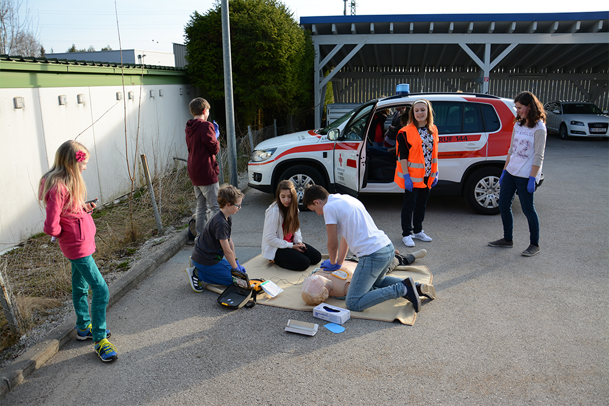
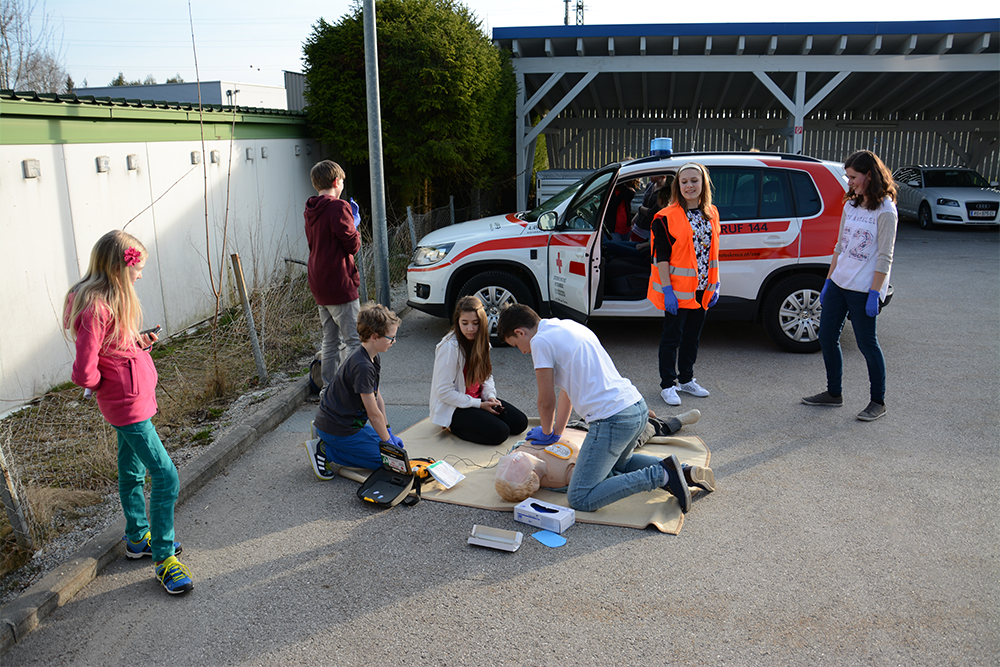

Das Jugendrotkreuz ist Teil des Österreichischen Roten Kreuzes. Das österreichische Jugendrotkreuz (ÖJRK) verfolgt das Ziel, junge Menschen zu mit menschlichem Verhalten, zu humanitärer Gesinnung und zu einer gesunden Lebensweise hinzuführen. Mit den zahlreichen Angeboten will das ÖJRK die jungen Menschen dabei unterstützen Eigeninitiative zu entwickeln, Hilfsbereitschaft zu zeigen und Verantwortung für sich und die Mitmenschen zu übernehmen.
Das Aufgabenspektrum des Jugendrotkreuzes ist nach regionalen Gegebenheiten und Personal sehr differenziert. Beim Jugendrotkreuz Rohrbach steht neben der Ersten Hilfe vor allem der Spaß im Vordergrund. Alle zwei Wochen kommt man für 1,5 Stunden im JRK-Raum zusammen und verbringt die Zeit sinnvoll mit anderen Kids sowie den Jugendrotkreuz Gruppenleitern.
Im Vordergrund steht selbstverständlich die Erste Hilfe. Gemeinsam erlernen wir die wichtigsten Bereiche, die ihr als Ersthelfer können müsst. Neben den Gruppenstunden könnt ihr euer Wissen auch bei Bewerben unter Beweis stellen. Neben diesem Bereich lassen sich die Gruppenleiter immer wieder neue Aktivitäten für die Gruppenstunden ein. Basteln, Backen, Spielen, etc. steht an der Tagesordnung. Außerdem geht es auch einmal raus aus den vier Wänden und man fährt gemeinsam auf Lager oder macht Tagesausflüge zu anderen Organisationen.
Bilder sagen bekanntlich mehr als tausend Worte. Lass dich einfach von den spannenden Eindrücken überzeugen!